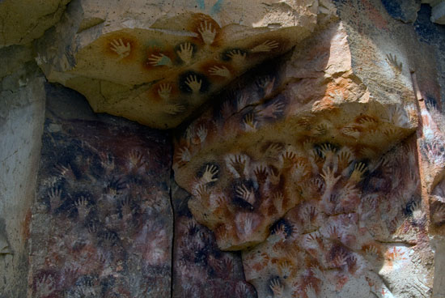
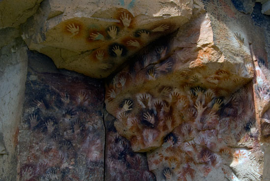

¿Querés irte al sur con tus amigos? Si es así, estamos acá para guiarte
El objetivo de esta página web es ayudar a posibles nuevos viajeros que quieren irse al sur de la Argentina a vacacionar. En este sitio te encontraras con distintos destinos recomendados para vacacionar y tips para llevar adelante, y que por lo tanto, se vuelva más amena la vida de camping o cabaña.
1. El recorrido de los siete lagos:
El recorrido de los 7 lagos es una ruta turística muy popular en la región de la Patagonia argentina, específicamente en la provincia de Neuquén. Esta ruta recorre un tramo de la Ruta Nacional 40, una de las carreteras más emblemáticas de Argentina. Los lagos que se encuentran a lo largo de esta ruta son:
- Lago machónico
- Lago Falkner
- Lago Villarino
- Lago Escondido
- Lago Correntoso
- Lago Espejo
- Lago Nahuel Huapi
La ruta atraviesa paisajes impresionantes, como bosques, montañas, ríos y, por supuesto, los hermosos lagos. Además de disfrutar de la belleza natural, en el recorrido se pueden realizar diversas actividades al aire libre, como senderismo, pesca, kayak, entre otras.
El recorrido de los 7 lagos suele comenzar en la ciudad de San Martín de los Andes y termina en Villa La Angostura, aunque también se puede hacer en sentido inverso. La distancia total es de aproximadamente 110 kilómetros y se puede realizar en coche, en bicicleta o en excursiones turísticas organizadas. Es una de las rutas más pintorescas y famosas de Argentina, atrayendo a turistas de todo el mundo.
2. Parque Nacional Los Glaciares:
Parque Nacional Los Glaciares: Hogar del famoso Glaciar Perito Moreno, este parque nacional en la provincia de Santa Cruz es un destino imperdible. Además del Perito Moreno, hay muchos otros glaciares para explorar, así como senderos para caminar y disfrutar de la belleza natural.
- Glaciar Perito Moreno: Este glaciar es uno de los más famosos del mundo y una atracción principal en el Parque Nacional Los Glaciares. Lo que lo hace único es su avance continuo, que causa desprendimientos espectaculares de hielo en el Lago Argentino. Es uno de los pocos glaciares en el mundo que no está retrocediendo.
- Campo de Hielo Patagónico Sur: También conocido como Hielos Continentales o Campo de Hielo Sur, es la segunda masa de hielo más grande del mundo después de la Antártida. Se extiende a lo largo de la frontera entre Argentina y Chile y alimenta numerosos glaciares en la región, incluido el Perito Moreno.
- Glaciar Upsala: Ubicado en el mismo parque nacional que el Perito Moreno, el Glaciar Upsala es el más grande de América del Sur en términos de área. Su espectacular vista desde el agua lo convierte en un destino popular para navegaciones.
- Glaciar Martial: Situado cerca de Ushuaia, en Tierra del Fuego, este glaciar es accesible a través de senderos de trekking. Ofrece una vista impresionante del paisaje montañoso y glaciares colgantes.
- Glaciar Viedma: Ubicado en la provincia de Santa Cruz, este glaciar es parte del Campo de Hielo Patagónico Sur y es conocido por su imponente belleza. Los visitantes pueden hacer excursiones para caminar sobre el glaciar o simplemente disfrutar de las vistas desde los miradores cercanos.
- Glaciar Spegazzini: Otro glaciar impresionante en el Parque Nacional Los Glaciares, el Glaciar Spegazzini se destaca por su altura y majestuosidad. Es uno de los glaciares más altos del parque, con paredes que alcanzan hasta 135 metros de altura.
- Glaciar Martial: Ubicado cerca de Ushuaia, en Tierra del Fuego, este glaciar es accesible a través de senderos de trekking y ofrece vistas impresionantes del paisaje montañoso y los glaciares colgantes.
3. La cueva de las manos
La Cueva de las Manos es un sitio arqueológico excepcional ubicado en la provincia de Santa Cruz, Argentina. A continuación, mencionaré algunos detalles acerca de este sitio arqueológico:
- Ubicación: La Cueva de las Manos se encuentra en la región de la Patagonia argentina, específicamente en el Cañadón del Río Pinturas, cerca del río homónimo, en un área conocida como la cuenca del río Pinturas. Está situada en un entorno natural impresionante, rodeada de mesetas y formaciones rocosas.
- Arte Rupestre: Lo que hace que la Cueva de las Manos sea tan especial es su arte rupestre excepcionalmente bien conservado. En las paredes de la cueva, se pueden encontrar pinturas que datan de hace más de 9.000 años. La característica más distintiva son las representaciones de manos humanas, que dan nombre al sitio. Estas manos están pintadas en diferentes colores y muestran una variedad de técnicas, incluyendo estarcido y plantillas.
- Otros Motivos Artísticos: Además de las manos, la cueva también contiene representaciones de animales como guanacos, ñandúes (aves parecidas al avestruz), felinos y otros motivos geométricos y abstractos. Estas pinturas proporcionan una ventana única a la cultura y la vida cotidiana de las poblaciones prehistóricas que habitaron la región.
- Significado Cultural: La Cueva de las Manos es un testimonio extraordinario de la creatividad y la habilidad artística de los antiguos habitantes de la región. Se cree que estas pinturas tenían un significado ritual, religioso y social para las comunidades que las crearon, aunque su interpretación exacta sigue siendo objeto de debate entre los arqueólogos.
- Patrimonio de la Humanidad: En 1999, la Cueva de las Manos fue declarada Patrimonio de la Humanidad por la UNESCO debido a su importancia cultural y su valor como registro arqueológico único en el mundo. Esta designación ayudó a aumentar la conciencia sobre la necesidad de proteger y preservar este sitio invaluable para las generaciones futuras.
- Acceso al Sitio: Hoy en día, la Cueva de las Manos es un destino turístico popular en la Patagonia argentina. Se puede acceder al sitio a través de tours guiados desde localidades cercanas como Perito Moreno y Los Antiguos. Sin embargo, debido a la fragilidad de las pinturas, el acceso a la cueva misma está restringido y controlado para proteger el arte rupestre.
En resumen, la Cueva de las Manos es un lugar extraordinario que ofrece una ventana única a la vida y el arte de las culturas prehistóricas en la región de la Patagonia. Su importancia histórica y cultural lo convierte en un destino imperdible para los amantes de la arqueología y la historia.
 
